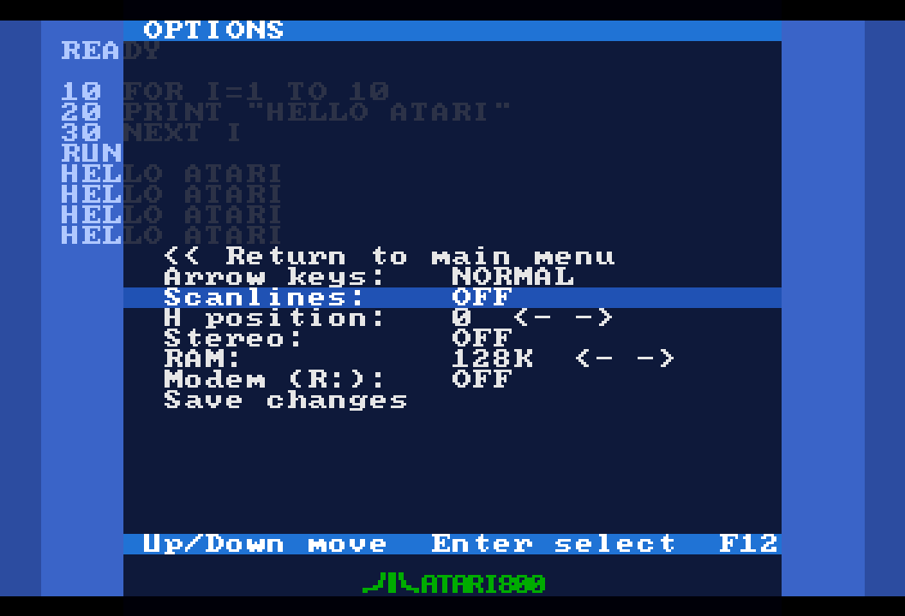

5. Options and atari.ini
The Options screen sets input, video, audio, memory and modem preferences; "Save changes" stores them in atari.ini on the SD card.
The Options screen
Open the OSD (F12 or S2) and select 8) Options.

Move with ↑/↓ and press Enter (or Fire) to toggle an item. The two items marked <- -> are changed with ←/→ (or the stick) instead. F12, S2 or << Return to main menu takes you back.
Every change is applied at once so you can see or hear it — except RAM, which needs a cold boot — but nothing is written to the SD card until you select Save changes.
Arrow keys
| Values | NORMAL (default) / JOYSTICK |
|---|---|
| Applies | Live |
| ini key | joystick=0 / joystick=1 |
With JOYSTICK, the keyboard's arrow keys drive Joystick 1 (alongside any real stick on port 1) and Left Alt is the fire button. Those keys are then suppressed from the Atari keyboard so they don't type stray characters. Set it back to NORMAL to type again.
atari.ini says at the next boot.Scanlines
| Values | OFF (default) / 25% / 50% / 75% — each press of Enter steps to the next |
|---|---|
| Applies | Live |
| ini key | scanlines=0 … scanlines=3 |
Adds CRT-style dark scanlines to the picture at the chosen strength. See Video.
H position
| Values | 0 (default) to 48, with ←/→ |
|---|---|
| Applies | Live — the picture slides as you hold the key |
| ini key | hpos=0 … hpos=48 |
Shifts the picture horizontally to centre it on your display. ← moves the picture to the left (a bigger number), → moves it back to the right. Pressing Enter on this item does nothing.
Stereo
| Values | OFF (default, mono) / ON |
|---|---|
| Applies | Live |
| ini key | stereo=0 / stereo=1 |
Enables the classic dual-POKEY stereo upgrade: a second POKEY at $D210, POKEY 1 on the left channel and POKEY 2 on the right. Off by default so ordinary software is unaffected. Turn it on before loading stereo-aware software, or the second POKEY stays silent. See Audio.
RAM
| Values | 128 KB (default, 130XE) / 320 / 576 / 1088 KB (RAMBO) — pick with ←/→ |
|---|---|
| Applies | On the cold boot that Enter performs on this item (a running machine cannot change its RAM size) |
| ini key | ram=128 / ram=320 / ram=576 / ram=1088 |
Choose the size with ←/→, then press Enter on the RAM row: the message Rebooting with new RAM size... appears and the Atari cold-boots with the new size. Remember to Save changes afterwards if you want it to stick. See RAM expansion.
Modem (R:)
| Values | OFF (default) / ON |
|---|---|
| Applies | On the next cold boot |
| ini key | modem=0 / modem=1 |
Opt-in support for the R: serial device (850-style modem) over the USB-C cable, so a terminal program such as BobTerm can dial a telnet BBS through the PC. When OFF (the default) it has no effect on normal use. This feature is a work in progress; see PC Link and Known issues.
The Modem option needs two files on the SD card that this project does not ship: the Altirra 850 handler and its relocator (Avery Lee's work, redistributed by the FujiNet project). Download 850handler.bin (1281 bytes) and 850relocator.bin (341 bytes) from the FujiNet firmware repository (data/webui/device_specific/BUILD_ATARI/) and place them on the card as /PC/850HAND.BIN and /PC/850REL.BIN, for example with atari.py send 850handler.bin PC/850HAND.BIN. The firmware serves them to the Atari at cold start when Modem is ON.
Keyboard
| Values | ATARI (default) / PC |
|---|---|
| Applies | Live |
| ini key | kbdlayout=0 / kbdlayout=1 |
ATARI treats your keyboard as an Atari keyboard by key position (the default, described in Keyboard). PC makes each key type what is printed on a US PC keyboard instead: Shift+2 gives @, the quote key gives ' and ", the bracket keys give [ and ]. Added in v3.1; details and the list of differences are in Keyboard → PC layout. Text pasted over the PC Link follows this setting automatically.
Save changes and the "*" marker
As soon as you change anything, the last row reads Save changes * — the star means there are changes that have not been written to the SD card. Select it to write all options to /atari.ini; the row shows Options saved. and the star disappears. If the card cannot be written you get the pop-up Cannot save options to SD.
atari.ini are loaded again.The atari.ini file
The file lives at /atari.ini in the root of the SD card. The firmware creates it the first time you Save changes and marks it as a hidden file, so you may need to show hidden files on your PC to see it. It is a plain text file with one key=value per line. Blank lines and lines starting with ;, # or [ are ignored; unknown keys are ignored too. Any other line without an = makes the firmware treat the file as corrupt.
A complete file with the defaults:
joystick=0
scanlines=0
hpos=0
stereo=0
modem=0
kbdlayout=0
ram=128
| Key | Values | Option |
|---|---|---|
joystick | 0 / 1 | Arrow keys NORMAL / JOYSTICK |
scanlines | 0 – 3 | Scanlines OFF / 25% / 50% / 75% |
hpos | 0 – 48 | H position (values outside the range are clamped) |
stereo | 0 / 1 | Stereo OFF / ON |
ram | 128 / 320 / 576 / 1088 | RAM size (any other value falls back to 128) |
modem | 0 / 1 | Modem (R:) OFF / ON |
You can edit the file on a PC if you prefer; it is read once when the board powers on. If the file is missing, all options take their defaults.